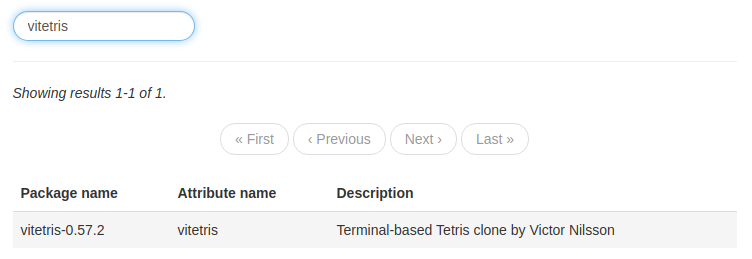
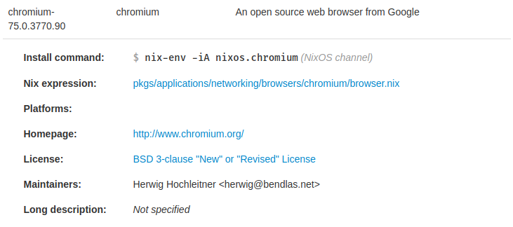

Introduction
NixOS4Noobs is a tutorial which teaches you how to use NixOS. However, this isn't like most tutorials which teaches you everything, it instead just tries to teach a few things which you're very likely to encounter.
Who this tutorial is for
Due to the large scale of NixOS and how it can be configured and set up, NixOS4Noobs will only focus on a configuration-based system. This is where your entire operating system is controlled using the configuration.nix file and nothing else.
This tutorial targets the following users:
- Users of a device which only they will access (not a device for multiple users)
- Users that want to control NixOS using just the configuration file
- Users that want everything installed system-wide
This tutorial is not for the following users:
- Those who use a device with a need for multiple users (e.g. a family)
- Users that want a clear separation between system-wide and local programs and services
Why use a configuration-based system?
Having a configuration based system has various advantages, namely:
- It's easy to configure - everything is in one location
- If something goes wrong, it's easy to pinpoint where the problem is (e.g. some dodgy installation)
- It's a reproducible setup (If you want to replicate a system on another device, just copy the configuration and it'll set it all up exactly as you want it to)
About
About the author
I'm just a NixOS user that is tired of seeing people struggle to figure out NixOS on the NixOS subreddit.
Suggestions or fixes
To suggest new content or topics that you deem suitable for NixOS4Noobs to cover, please feel free to make a pull request or open an issue
Getting Started
Editing the system configuration
As of NixOS 19.03 (Koi), you can open the system configuration in the default system editor with the following command:
$ sudo nixos-rebuild edit
Alternatively, you can edit the file located at /etc/nixos/configuration.nix
Building the system configuration
In order to apply any changes to the configuration.nix file, the NixOS configuration needs to be rebuilt.
The nixos-rebuild command is used to rebuild the system configuration. In general, there are two commands you may want to run in order to properly build the system:
Rebuild + Switch
$ sudo nixos-rebuild switch
Running this command performs the following:
- Rebuilds the current
configuration.nixfile - Downloads any new packages
- Adds a new entry to the boot menu
- Applies the changes of the configuration right away (whilst you're still using the system. It's basically seamless!)
Any new packages can be used right away, any new services will be started right away, however environmental variables will not be activated until the next reboot.
Rebuild (No switch)
$ sudo nixos-rebuild boot
This basically does everything that sudo nixos-rebuild switch does, except it does not apply the changes of the configuration right away. When the system is rebooted, the newly built configuration will be used.
Installing programs
There are many different ways of installing programs on NixOS. In this section, we will cover two methods of installing programs that use the configuration.nix file.
Method 1: Installing programs using the programs attribute
Certain programs can be installed by using the following structure in your configuration.nix file:
programs = {
# Programs go here
};
Only a few programs can be installed this way - these programs can be found here by using the NixOS options search feature, or by using the nix repl:
nix repl '<nixpkgs/nixos>'
nix-repl> builtins.attrNames config.programs
Note
Using this method for installing programs is desirable if possible compared to method 2, as this normally sets the required environment variables for the program to function properly. In addition, various configuration options are available (e.g. adding shell aliases to the fish shell)
Of course, this is only an option if the specific program you want exists in the programs attribute.
Example: Installing and setting up the fish shell
In this example, we enable the program chromium, as well as the fish command. We also add an alias to the du command called dirsize which can be used within the fish shell:
programs = {
chromium.enable = true;
fish = {
enable = true;
shellAliases = [
dirsize = "du -sh"
];
};
};
Method 2: Installing programs using the system packages
Unfree packages
Certain packages are known as
unfree, which means that their license states that they cannot be redistributed (for example, Google Chrome). In order to installunfreepackages, you need to add the following to yourconfiguration.nixfile:nixpkgs.config = { allowUnfree = true; };
This method of installing programs is the primary method of installing programs in NixOS. It basically uses the entire Nixpkgs suite of packages and allows you to choose the packages you want. The general structure in your configuration.nix file will look something like this:
environment.systemPackages = with pkgs; [
# Packages go here
];
Finding packages is a little bit more tricky compared to finding programs in method 1. The following strategies are as follows:
Using the nix search command
Using nix search is the easiest way to find packages for your current version of NixOS. Simply type nix search <packageName> to search for a specific package
$ nix search google chrome
* nixpkgs.google-chrome (google-chrome)
A freeware web browser developed by Google
* nixpkgs.google-chrome-beta (google-chrome-beta)
A freeware web browser developed by Google
* nixpkgs.google-chrome-dev (google-chrome-dev)
A freeware web browser developed by Google
* nixpkgs.python37Packages.PyChromecast (python3.7-PyChromecast)
Library for Python 3.4+ to communicate with the Google Chromecast
To use a package from the nix search command, you must include the package name after nixpkgs, not the name in brackets. This is due to various package 'flavours' being packaged under a single package name.
For example:
environment.systemPackages = with pkgs; [
google-chrome
gnome3.gnome-mahjongg
];
Using the online package search
Using the NixOS package search website, it's easy to find packages. The name required in the system packages from this website is the Attribute name field.

environment.systemPackages = with pkgs; [
vitetris
];
Setting up services
The NixOS configuration also allows you to manage services that run in the background, in addition to programs.
Installing NixOS services
Services can be found using the NixOS options search website to find services that have been defined by the NixOS community. Services start with the prefix services. and can be enabled and configured in your configuration.nix file.
For example, to enable the mpd (Music Player Daemon) service, you can add it to your configuration.nix as follows:
services = {
mpd.enable = true;
};
Setting environment variables
Environment variables can also be set using your configuration.nix file. This is done using the environment.variables setting:
environment.variables = {
# Environment variables go here
};
Single value environment variables
Environment variables with a single value can be defined using a simple assignment of the environment variable name and its corresponding value:
environment.variables = {
XDG_CONFIG_HOME = "$HOME/.config";
};
Multi value environment variables
Environment variables that use a list of values (e.g. $PATH, $XCURSOR_PATH) can be declared using a Nix Expression list type as shown:
environment.variables = {
XCURSOR_PATH = [
"$HOME/.icons"
"$HOME/.nix-profile/share/icons"
];
};
Using the system path
To use the current system path which will be generated when building the NixOS configuration, you can use the Nix Expression string with enclosed Nix expressions:
environment.variables = {
XCURSOR_PATH = [
"${config.system.path}/share/icons"
];
};
This will map ${config.system.path} to the directory /run/current-system/sw/ when the system is built.
Installing fonts
Installing fonts is slightly different compared to installing regular system packages - fonts must be installed under the fonts attribute.
The general structure is as follows:
fonts.fonts = with pkgs; [
# Fonts go here
];
Unfortunately, searching for font packages is incredibly unintuitive. Font packages look just like regular packages and adding them to the system packages does not install them properly. The 100% best safest way to find fonts is as follows:
- Search for the font you're looking for on the NixOS packages search website
- Click on the package on the website (this shows a quick description of the package, along with various other information)
- Make sure that the package's Nix expression starts with
pkgs/data/fonts
Then, as similar to installing system packages, add the Attribute name to the fonts section:
fonts.fonts = with pkgs; [
comic-relief
font-awesome_4
];
NixOS configuration options
The NixOS configuration file also contains a section for other options to manage the system. This includes, but not limited to:
- Configuring the hardware setup
- Configuring TTYs
- Configuring security systems
- Configuring the way Nix builds your configuration
- Configuring the boot setup
Searching for these options is a little more tricky, but here are various ways to go about doing so:
Method 1: Using the online options search
This method is best for finding new options and finding examples of alternative values for options
The Search NixOS options website is the best way to search for options. It includes descriptions of each option, along with its default value and sometimes an example of alternate values. Using options is as simple as declaring the Option name in your configuration.nix file and assigning a value to it:
hardware.bluetooth.enable = true;
Method 2: Using the nixos-option command
This method is best for finding where your current system's configuration settings are declared
The nixos-option command lets you browse the options by name. Compared to using the website, this is a lot more tedious and slow.
$ nixos-option
This attribute set contains:
_module
appstream
assertions
boot
...
$ nixos-option hardware
This attribute set contains:
bladeRF
bluetooth
brightnessctl
$ nixos-option hardware.bluetooth
This attribute set contains:
enable
extraConfig
package
powerOnBoot
If you reach the final "leaf" node of an option, the nixos-option command will provide information about that option, as well as the current assigned value in your current system configuration. This is the best method for searching for options that are defined in your current system configuration, especially if you have your configuration split over multiple files.
$ nixos-option hardware.bluetooth.enable
Value:
true
Default:
false
Example:
true
Description:
"Whether to enable support for Bluetooth.."
Declared by:
"/nix/var/nix/profiles/per-user/root/channels/nixos/nixos/modules/services/hardware/bluetooth.nix"
Defined by:
"/etc/nixos/configuration."
Method 3: Using the Nix repl
This method is best for finding the values of your current system's configuration
Opening a Nix repl with the '<nixpkgs/nixos>' parameter allows you to browse your current configuration.nix file as a parsed Nix expression. Compared to nixos-option, the Nix repl is a much faster way of traversing the set of system configuration options with its tab completion facility.
(In the example below, wherever you see [Tab], this means press the tab button)
$ nix repl '<nixpkgs/nixos>'
nix-repl> config.[TAB]
config._module config.i18n config.programs
config.appstream config.ids config.security
config.assertions config.jobs config.services
...
You can also use the Nix repl to view the current values of your current system configuration:
$ nix repl '<nixpkgs/nixos>'
nix-repl> config.hardware.bluetooth.enable
true
Method 4: Using man configuration.nix
The man configuration.nix command displays all options that is available for the configuration.nix file. It's basically the same as Method 1, except searching for certain options is a little bit more tricky and technical. Using the / key, it is possible to search the man page for a specific option.
Method 5: Using other people's configuration.nix file
One of the best ways of figuring out how to use various NixOS configuration options is to look at other NixOS user's configuration files. This website is dedicated to a set of repositories of NixOS users and can be used to search for certain attributes in their specific configuration files by using the File Path setting in the Advanced section below the main textbox.
This also includes links to their repositories to where the code is declared. In addition, JorelAli's configuration is a pretty good resource that is well documented.
Managing Nix Packages
Nix channels
Nix channels are basically "where the downloaded packages come from". By default, on NixOS, packages are downloaded from the nixos channel (Is that really a surprise?)
In general, when it comes to channels, there are 31 channels that are available:
| Channel | Example channels |
|---|---|
| Stable channels | nixos-19.03 |
| Unstable channels (bleeding-edge) | nixos-unstable |
| Old channels | nixos-18.03, nixos-17.09 |
Using different channels in your configuration
There are two major methods of using different channels in your configuration.nix file. Which one you choose is entirely up to you, each have their own perks and drawbacks.
Warning
There are multiple different "defined" NixOS channels out there. Some are named
nixos, whereas others are namednixpkgs. Do not use nixpkgs channels on NixOS. Thenixoschannels have different tests to thenixpkgschannels and are designed for the operating system as a whole, unlike thenixpkgschannels.
Method 1: Using nix-channel
The nix-channel command is designed to manage multiple nix channels on your system. It's easy to update channels to the latest versions and add or remove channels.
-
To list all channels that are available in your system, use the
--listflag:$ sudo nix-channel --list -
To add a new channel (for example
nixos-unstable), use the--addflag, followed by the URL of the channel and a name to identify it by. The list of channel URLs can be found at https://nixos.org/channels/.$ sudo nix-channel --add https://nixos.org/channels/nixos-unstable unstable -
To update a channel, use the
--updateflag, followed by the channel name that you declared when you added the channel:$ sudo nix-channel --update unstable
Once you've added your desired channels, you can then add them to your configuration.nix file. This can be done using the Nix let expression, as followed:
{ config, pkgs, ... }:
let
unstable = import <unstable> {};
in {
# The rest of your configuration here
environment.systemPackages = with pkgs; [
# To use unstable packages, precede package names with unstable.
# as defined in the "let ... in" section above
unstable.hello
];
};
Method 2: Using git revisions
This method gives you much more control over what specific version of Nixpkgs you want to use on your system, however it means that updating channels (if you choose to do so) will also have to be done manually.
The only difference is that you require the following code structure:
import (builtins.fetchGit {
name = "NAME";
url = https://github.com/nixos/nixpkgs/;
rev = "REV";
}) {};
The NAME is some sort of descriptive name for your own benefit, and the REV refers to the Git commit hash of your choosing (This is pretty easy to find on GitHub, it's shown as a 7-character string on the Nixpkgs repository's commits - clicking on the clipboard icon next to it copies the full hash to your clipboard)
An example of using this would be as follows:
{ config, pkgs, ... }:
let
myNixpkgs = import (builtins.fetchGit {
name = "nixos-unstable-2018-09-12";
url = https://github.com/nixos/nixpkgs/;
rev = "ca2ba44cab47767c8127d1c8633e2b581644eb8f";
}) {};
in {
# The rest of your configuration here
environment.systemPackages = with pkgs; [
# Exactly the same as the above example
myNixpkgs.hello
];
};
Alternatively, you can easily change all packages declared in the system packages to use your chosen git revision by changing the packages that are brought into scope after the with keyword:
environment.systemPackages = with myNixpkgs; [
hello
];
Finding information about current nix channels
The NixOS channel update website provides insights on when the various Nix channels were last updated, including the link to the latest commit that was included for that update. It's the quickest and easiest way for you to browse through the repository to find whether a specific package has been updated or not.
Technically there are 4 channels: Stable, Unstable, Old and Small. Small channels have much less packages, such as no desktop packages or packages for certain programming languages, as well as less tests for actual operating system usage. They're designed for servers running NixOS, where you want speedy updates. They normally build more stuff from source compared to other NixOS channels.
Nix garbage collection
With NixOS, it's important to clear the garbage now and then. Clearing the garbage removes the following things from your system:
- Old boot entries
- Unused derivations
/nix/store/trash- Stale symlinks
Clearing the garbage means that certain packages which were downloaded on the fly will be removed (For example, packages downloaded using nix-shell -p), and will have to be re-fetched in order to use them again.
Clearing all of the garbage
Warning
Clearing old boot entries makes rolling back to a previous configuration impossible. Only do this if you are certain that your current system is stable. This action cannot be undone.
Using the nix-collect-garbage command is used to manage all of your garbage cleaning needs. To remove everything from the Nix store that is not used by the current system (so, this includes old derivations, files, symlinks and boot entries), run the following command:
sudo nix-collect-garbage -d
sudo nixos-rebuild switch
Rebuilding the system at the end is required to update the set of boot entries.
Clearing some of the garbage
Instead of clearing absolutely everything, it's often better to just clear the majority of the garbage. This doesn't clear the boot entries and ensures that previous generations are kept safe, so you are able to rollback if needed:
sudo nix-collect-garbage
Automatically clearing garbage
NixOS provides a configuration option that allows it to automatically collect the garbage at certain time intervals. This is done using the nix.gc option:
nix.gc = {
automatic = true; # Enable the automatic garbage collector
dates = "03:15"; # When to run the garbage collector
options = "-d"; # Arguments to pass to nix-collect-garbage
};
The format for the dates attribute can be found at the systemd.time man page.
Setting package options
The NixOS configuration file not only allows you to configure the system, but it also allows you to configure the process of building itself. This is done by changing the attributes of the nixpkgs option. This also allows you to edit the settings of other applications which are installed in your system packages.
Enabling unfree software
As mentioned in the chapter on installing programs, unfree software (software that is not permitted to be redistributed) can be installed by using the following in your configuration.nix file:
nixpkgs.config = {
allowUnfree = true;
};
Setting package specific settings
Using the NixOS package search website that was described in the chapter on installing programs, we are able to search for packages that we want. When you click on the package, it provides information about the package. In particular, we want to look at the Nix expression for the package. This concept is better explained using an example:
Example: Enabling flash on Chromium:
Firstly, we search for chromium using the NixOS package website. Clicking on the result provides us with a link to the Nix expression where this package is defined:

Following the link leads us to a file called browser.nix. Unfortunately, in order to find the list of potential settings, we need to use the main endpoint for packages, which is the default.nix file. This can be done by changing directories (shown at the top of the file on GitHub) to find the relevant default.nix file.
A snippet of the chromium default.nix file is shown below:
...
# package customization
, channel ? "stable"
, enableNaCl ? false
, gnomeSupport ? false, gnome ? null
, gnomeKeyringSupport ? false
, proprietaryCodecs ? true
, enablePepperFlash ? false
, enableWideVine ? false
, cupsSupport ? true
, pulseSupport ? config.pulseaudio or stdenv.isLinux
, commandLineArgs ? ""
}:
...
Any parameters followed with a ? are basically optional, where the value after the ? is their default value. In this example, we want to enable flash, so what we want to do is basically redefine the package named "chromium" with a copy of the package, except with the enablePepperFlash option set to true.
nixpkgs.config = {
chromium = {
enablePepperFlash = true;
};
};
And it's that easy. This basically changes the package chromium which is used in environment.systemPackages to our new version of chromium that has pepper flash enabled (Pepper Flash is basically flash, but maintained by Google instead of Adobe). When the configuration is built, it will use the version of chromium that we have declared as opposed to the default version of chromium.
Overriding attributes
Sandboxes & Containers
Nix shell sandboxes
Say you want to test out a program, but don't want to go through all of the effort of adding it to your system configuration and rebuilding it. This is where the Nix shell comes in.
Temporarily using programs
To temporarily bring a Nix package into the scope of your current terminal, you can use the nix-shell -p command. This lets you specify Nix packages which will be included in the "nix shell" environment, as well as your current packages.
$ nix-shell -p hello
[nix-shell:~]$ hello
Hello, world!
You are still able to modify the environment around you (e.g. create folders, edit files, open programs that are currently installed on your system). When you exit the nix shell (Using the exit command), that package is not present on your current system. For example, if I use nix-shell -p hello, the hello command is only present in the nix shell even if it wasn't installed with my main configuration.
To add multiple packages, include their names (as if you were adding it to your configuration.nix file) with a space between each one:
$ nix-shell -p hello gnome3.gnome-mahjongg vitetris
Pure Nix shell environments
By adding the --pure tag to the nix-shell command, you are able to create an environment which contains none of the packages installed on your current system.
For example, if you have the following in your configuration.nix file:
environment.systemPackages = with pkgs; [
hello
];
Running the hello command in a pure nix shell that doesn't have the hello package will produce the following result:
$ nix-shell --pure -p
[nix-shell:~]$ hello
The program 'hello' is currently not installed. It is provided by several packages. You can install it by typing one of the following:
nix-env -iA nixos.hello
nix-env -iA nixos.mbedtls
nix-env -iA nixos.perkeep
Garbage collection of Nix shells
When a package is downloaded temporarily for use in the Nix shell, it is stored in the Nix store (in /nix/store) until garbage collected. Until it is garbage collected, opening the same Nix shell for downloaded programs will be instant (as they're already downloaded).
As stated in the chapter on garbage collection, running the Nix garbage collector will remove any temporarily installed programs. Once garbage collected, in order to use them again, they will be redownloaded when a Nix shell is opened that requires packages which aren't in the Nix store.
Nix shells with fish or zsh
When using Nix shells, it can sometimes be useful to keep track of what packages are currently installed in that instance of the Nix shell. A helpful tool is the any-nix-shell, which shows the information of temporarily installed packages when using the fish shell or the z shell.
Containers
TODO: Creating containers.
Making Nix packages
Building packages
Nix Expressions
The configuration.nix file is written as a Nix Expression, which is basically the "programming language" that Nix uses. In this chapter, we will cover the basics1 of writing Nix expressions, specifically for the NixOS configuration.
In particular, we will cover the things that you're likely to discover in the configuration.nix file. We will not cover all of the technicalities (e.g. function definitions), but we will cover enough to get you through the configuration.
Basic data types
As with any programming language, there are the basic data types, which are as follows:
-
Strings - Text values which are encased in quotes
"hello", or two single quotes for multi-line strings:'' This is on line 1 This is another line ''If you want to use Nix variables inside your strings, you can do so using the
${}notation, like this2:someSet = rec { myVar = "hello"; someString = "${myVar}, world!" }2See the section below for recursive sets - since we reference
myVarin the declaration ofsomeString, the set needs to be declared as recursive. -
Integers & Floats - Numerical values, such as
2or501.23. Integer and floating point numbers are inferred. If using math with integers, integer division will be used by default. -
Paths - Paths to files and directories don't need quotes, they can be written just like
/some/directory/file.txt -
Functions - These basically execute code. These will not be covered in NixOS4Noobs.
-
Lists & Sets - These are explained in more detail below
Lists
In Nix expressions, lists are declared using square brackets, and use a space to separate each element.
Example: System packages
The system packages section of the configuration file is represented as a list:
environment.systemPackages = [
hello
chromium
];
It can also be written like this (Typically a space is put after the [ and before the ], but this is optional):
environment.systemPackages = [ hello chromium ];
Complex elements which would involve spaces require brackets to "contain" them:
environment.systemPackages = [
hello
(import ./someLocalPackage.nix {})
chromium
];
Sets (Attribute sets)
Sets are similar to tables with key-value pairs. They consist of elements declared by some key, and assigned a value which can be any type. Sets are declared using curly brackets, and a semicolon is used to separate each key-value pair. Sets are polymorphic (They can have multiple types for values, not for keys).
mySet = {
name = "Bob";
otherName = "Jim";
aNumber = 2;
isItWednesday = false;
}
Example: System programs
Sets are used to declare programs for the system using the programs key:
programs = {
adb.enable = true;
bash.enableCompletion = true;
ssh.forwardX11 = true;
};
Sets inside sets
Because sets contain elements of keys and values, where values can be of any type, there's nothing stopping you from declaring a set with an element which is also a set.
mySet = {
myKey = {
someValueInInnerSet = 10;
};
}
This can get tedious and overcomplicated, so we can simplify this using the dot notation:
mySet.myKey = {
someValueInInnerSet = 10;
}
Or even simpler:
mySet.myKey.someValueInInnerSet = 10;
Example: Enabling sound in the system configuration
In most configurations, enabling sound is done using the following code:
sound.enable = true;
This can be written as:
sound = {
enable = true;
}
There's no preference to which one is right and which one is wrong, it's entirely up to you. Some people like to split them up to make sections easier to read.
Recursive sets (rec)
Sets that use variables or values that are declared inside itself need to be declared as a recursive set. This is done using the rec keyword, which comes just before the opening curly brackets:
someSet = rec {
someValue = 2;
someOtherValue = 2 + someValue;
}
This also applies for anything used in Strings using the ${} notation:
someSet = rec {
myVar = "hello";
someString = "${myVar}, world!"
}
Advanced Nix
Modules
Overlays
Nix Shell
In chapter 3.1. Nix shell sandboxes, we discussed...
Unsafe NixOS
Note:
The contents of this chapter are heavily advised against. These contain a list of poor practices for NixOS systems and are advised as a temporary measure - not to be used permanently. Use your own judgement of the situation before checking if these solutions are for you.
Using the FHS
Sometimes, things just don't work on NixOS. For example, say a developer has written a program that uses the an executable in the directory /usr/bin/someExecutable. Unfortunately, say this developer also hardcoded this directory path in their code. This means that we cannot change it, or patch it using normal means (such as creating a wrapper for it).
In order to bypass this, we can create a sandbox in NixOS that uses the Unix "Filesystem Hierarchy Standard" (FHS1).
There are two methods of using the FHS:
Declaring a FHS environment in the configuration
You can declare a FHS environment in your configuration.nix file. This allows you to enter this sandboxed environment using a command in any directory. This is done by using the pkgs.buildFHSUserEnv function to create a sandbox derivation.
Example: A C++ execution environment for LLVM
In this example, we use pkgs.buildFHSUserEnv to create a sandbox to aid in C++ development for other Linux systems. We include various debugging tools, such as gdb and valgrind, as well as the required libraries that we'll need, such as llvm.
environment.systemPackages = with pkgs; [
(pkgs.buildFHSUserEnv {
name = "cppfhs";
runScript = "bash";
targetPkgs = pkgs: with pkgs; [
clang_8 gdb llvm_8 valgrind
];
})
];
We name this derivation cppfhs, which allows us to use the following command in any shell to quickly enter this environment:
$ cppfhs
The Filesystem Hierarchy Standard specifies directories such as /usr/bin, /usr/lib and /bin. On NixOS, these directories exist, but aren't in use as you'd expect with regular Unix systems.